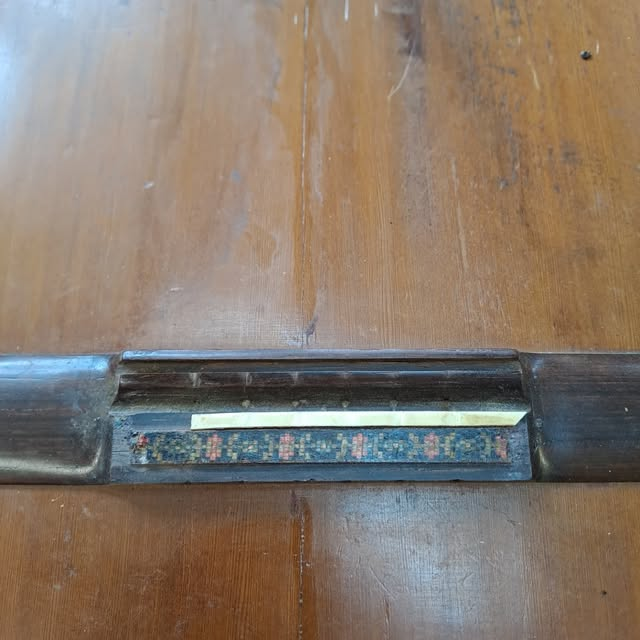
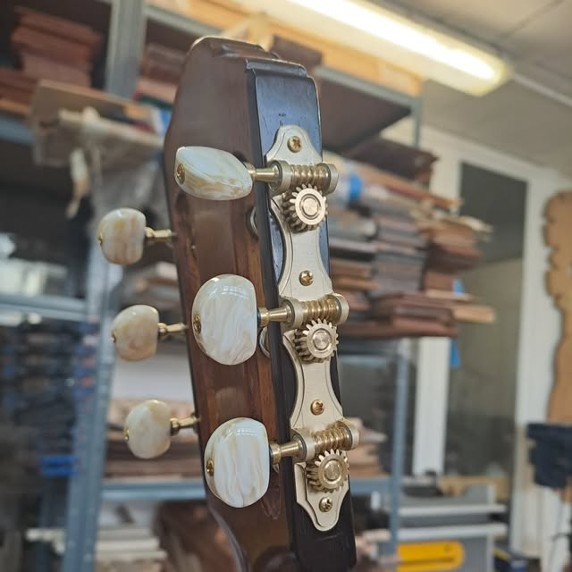
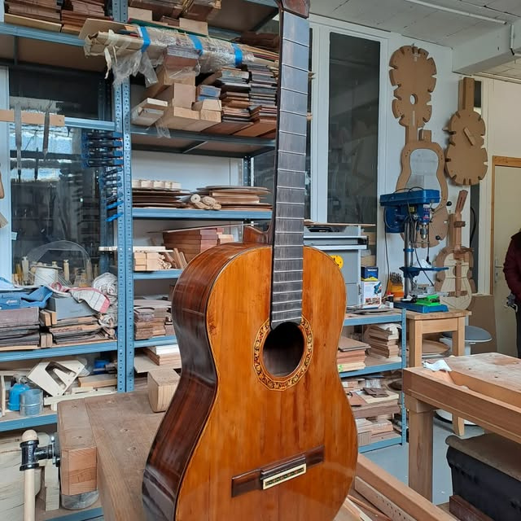

PASAPORTE DEL INSTRUMENTO
Tradition – Cut
N° 35290
Todas las características
Especificaciones de salida del taller · Datos de la ficha original 35290. Las fotografías de esta muestra no identifican este instrumento.
Consultar ficha original ↗LUTHIER DE GUITARRAS CLÁSICAS · FRANCIA
Guitarras clásicas artesanales de Víctor Iermito. Una invitación a descubrir los instrumentos y el trabajo del taller.
Descubrir las guitarras↗
UNA MIRADA AL TALLER · FOTO DE INSTAGRAMLOS INSTRUMENTOS


EL TALLER
Soy Víctor Iermito, luthier de guitarras clásicas en Francia. Este es un primer recorrido por mi universo: la madera, los detalles y los instrumentos que pasan por el taller.
Hablemos de tu próxima guitarra ↗LA IDENTIDAD DE TU GUITARRA
Consulta las características de tu guitarra tal como salió del taller. El número de serie conecta cada instrumento con su ficha.
En esta muestra está disponible la ficha 35290. El sistema QR actual sigue funcionando en su dirección original.
Especificaciones de salida del taller · Datos de la ficha original 35290. Las fotografías de esta muestra no identifican este instrumento.
Consultar ficha original ↗VICTOR IERMITO · LUTHIER